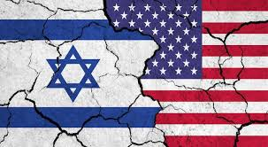

Os Estados Unidos e Israel poderiam justificar um conflito com o Irã principalmente por preocupações com segurança e estabilidade regional. Um dos principais argumentos seria o programa nuclear iraniano, que ambos afirmam representar risco de desenvolvimento de armas nucleares. Para esses países, a possibilidade de um Irã nuclear poderia alterar o equilíbrio de poder no Oriente Médio. Israel frequentemente declara que considera o programa nuclear iraniano uma ameaça direta à sua existência. O governo israelense argumenta que precisa impedir que o Irã obtenha capacidade nuclear militar para garantir sua segurança nacional. Os Estados Unidos também poderiam alegar que o Irã tem influência em conflitos regionais ao apoiar grupos armados em diferentes países do Oriente Médio. Na visão de Washington e Tel Aviv, esse apoio pode contribuir para instabilidade e violência na região. Outro argumento possível seria a proteção de aliados e parceiros estratégicos no Oriente Médio. Países como Arábia Saudita, Emirados Árabes Unidos e outros parceiros dos EUA poderiam ser citados como parte das preocupações de segurança regional. Questões relacionadas à liberdade de navegação no Golfo Pérsico também poderiam ser mencionadas. Essa região é uma das principais rotas do comércio mundial de petróleo, e qualquer ameaça à circulação de navios pode impactar a economia global. Além disso, tanto os Estados Unidos quanto Israel poderiam apresentar o conflito como uma tentativa de impedir o avanço militar iraniano e reduzir tensões futuras, afirmando que suas ações teriam como objetivo evitar ameaças maiores à segurança internacional.
